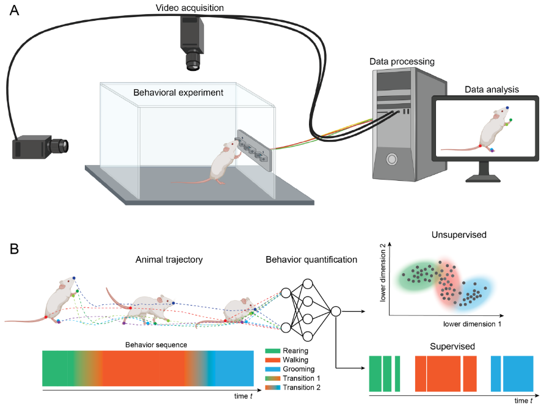
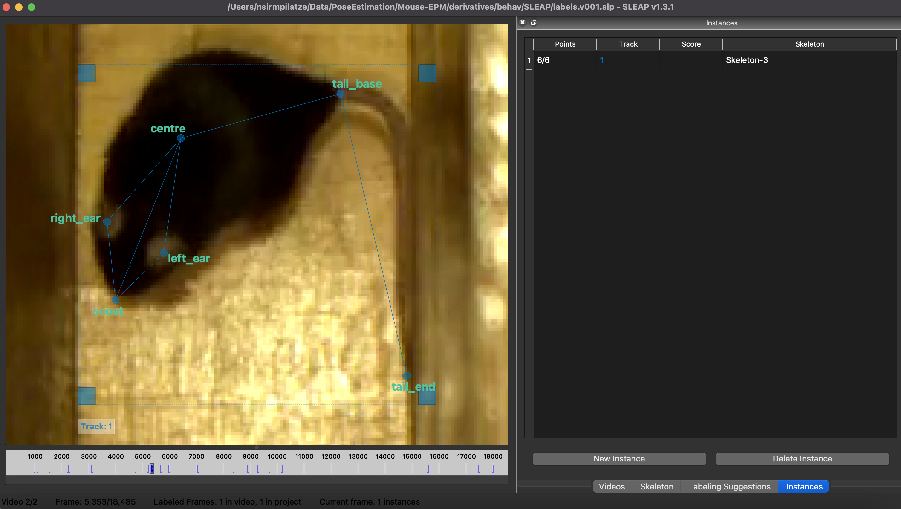
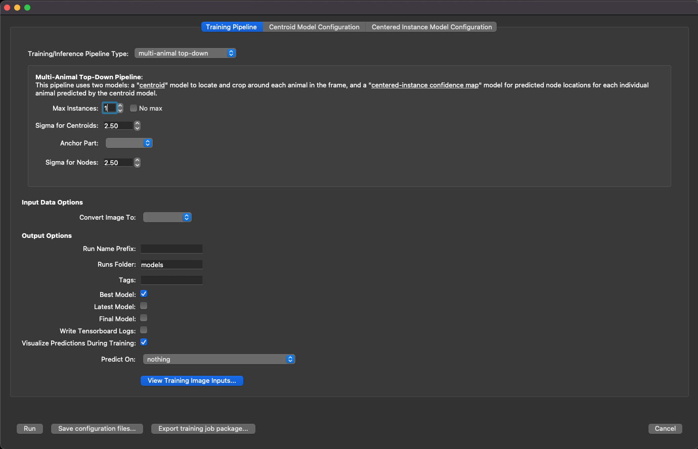
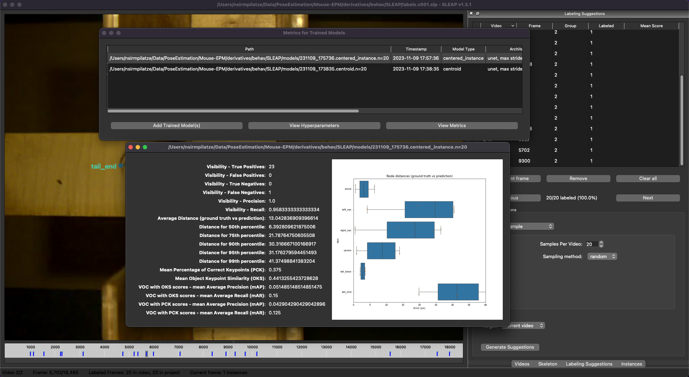

flowchart TB
classDef emphasis fill:#03A062;
video -->|compression/re-encoding | video2["compressed video"]
video2 -->|pose estimation + tracking| tracks["pose tracks"]
tracks --> |calculations| kinematics
tracks -->|classifiers| actions["actions / behav syllables"]
video2 --> |comp vision| actions
linkStyle 1 stroke:#03A062, color:;
class video2 emphasis
class tracks emphasis
Running pose estimation on the SWC HPC system
Adam Tyson, Niko Sirmpilatze & Laura Porta
Contents
- Introduction to High Performance Computing
- SWC HPC system
- Using the job scheduler
- Running pose estimation on the SWC HPC
Introduction to High Performance Computing (HPC)
- Lots of meanings
- Often just a system with many machines (nodes) linked together with some/all of:
- Lots of CPU cores per node
- Powerful GPUs
- Lots of memory per node
- Fast networking to link nodes
- Fast data storage
- Standardised software installation
Why?
- Run jobs too large for desktop workstations
- Run many jobs at once
- Efficiency (cheaper to have central machines running 24/7)
- In neuroscience, typically used for:
- Analysing large data (e.g. high memory requirements)
- Parallelising analysis/modelling (run on many machines at once)
SWC HPC hardware
(Correct at time of writing)
- Ubuntu 20.04
- 81 nodes
- 46 CPU nodes
- 35 GPU nodes
- 3000 CPU cores
- 83 GPUs
- ~20TB RAM
Logging in
Log into bastion node (not necessary within SWC network)
This node is fine for light work, but no intensive analyses
Logging in

More details
See our guide at howto.neuroinformatics.dev
File systems
/nfs/nhome/live/<USERNAME>or/nfs/ghome/live/<USERNAME>- “Home drive” (SWC/GCNU), also at
~/
- “Home drive” (SWC/GCNU), also at
/nfs/winstor/<group>- Old SWC research data storage (read-only soon)/nfs/gatsbystor- GCNU data storage/ceph/<group>- Current research data storage/ceph/scratch- Not backed up, for short-term storage/ceph/apps- HPC applications
Note
You may only be able to “see” a drive if you navigate to it
Navigate to the scratch space
HPC software
All nodes have the same software installed
- Ubuntu 20.04 LTS
- General linux utilities
Modules
Preinstalled packages available for use, including:
- BrainGlobe
- CUDA
- Julia
- Kilosort
- mamba
- MATLAB
- miniconda
- SLEAP
Using modules
List available modules
SLURM
- Simple Linux Utility for Resource Management
- Job scheduler
- Allocates jobs to nodes
- Queues jobs if nodes are busy
- Users must explicitly request resources
SLURM commands
View a summary of the available resources
atyson@sgw2:~$ sinfo
PARTITION AVAIL TIMELIMIT NODES STATE NODELIST
cpu* up infinite 29 idle~ enc1-node[1,3-14],enc2-node[1-10,12-13],enc3-node[5-8]
cpu* up infinite 1 down* enc3-node3
cpu* up infinite 2 mix enc1-node2,enc2-node11
cpu* up infinite 5 idle enc3-node[1-2,4],gpu-380-[24-25]
gpu up infinite 9 mix gpu-350-[01,03-05],gpu-380-[10,13],gpu-sr670-[20-22]
gpu up infinite 9 idle gpu-350-02,gpu-380-[11-12,14-18],gpu-sr670-23
medium up 12:00:00 4 idle~ enc3-node[5-8]
medium up 12:00:00 1 down* enc3-node3
medium up 12:00:00 1 mix gpu-380-10
medium up 12:00:00 10 idle enc3-node[1-2,4],gpu-380-[11-12,14-18]
fast up 3:00:00 1 mix gpu-380-10
fast up 3:00:00 9 idle enc1-node16,gpu-380-[11-12,14-18],gpu-erlich01View currently running jobs (from everyone)
atyson@sgw2:~$ squeue
JOBID PARTITION NAME USER ST TIME NODES NODELIST(REASON)
4036257 cpu bash imansd R 13-01:10:01 1 enc1-node2
4050946 cpu zsh apezzott R 1-01:02:30 1 enc2-node11
3921466 cpu bash imansd R 51-03:05:29 1 gpu-380-13
4037613 gpu bash pierreg R 12-05:55:06 1 gpu-sr670-20
4051306 gpu ddpm-vae jheald R 15:49 1 gpu-350-01
4051294 gpu jupyter samoh R 1:40:59 1 gpu-sr670-22
4047787 gpu bash antonins R 4-18:59:43 1 gpu-sr670-21
4051063_7 gpu LRsem apezzott R 1-00:08:32 1 gpu-350-05
4051063_8 gpu LRsem apezzott R 1-00:08:32 1 gpu-380-10
4051305 gpu bash kjensen R 18:33 1 gpu-sr670-20
4051297 gpu bash slenzi R 1:15:39 1 gpu-350-01More details
See our guide at howto.neuroinformatics.dev
Partitions
Interactive job
Start an interactive job (bash -i) in the cpu partition (-p cpu) in pseudoterminal mode (--pty).
Always start a job (interactive or batch) before doing anything intensive to spare the gateway node.
Run some “analysis”
Clone a test script
Create conda environment
Activate conda environment and run Python script
Batch jobs
Check out batch script:
#!/bin/bash
#SBATCH -p gpu # partition (queue)
#SBATCH -N 1 # number of nodes
#SBATCH --mem 2G # memory pool for all cores
#SBATCH -n 2 # number of cores
#SBATCH -t 0-0:10 # time (D-HH:MM)
#SBATCH -o slurm_output.out
#SBATCH -e slurm_error.err
#SBATCH --mail-type=ALL
#SBATCH --mail-user=adam.tyson@ucl.ac.uk
module load miniconda
conda activate slurm_demo
for i in {1..5}
do
echo "Multiplying $i by 10"
python multiply.py $i 10 --jazzy
doneRun batch job:
Array jobs
Check out array script:
#!/bin/bash
#SBATCH -p gpu # partition (queue)
#SBATCH -N 1 # number of nodes
#SBATCH --mem 2G # memory pool for all cores
#SBATCH -n 2 # number of cores
#SBATCH -t 0-0:10 # time (D-HH:MM)
#SBATCH -o slurm_array_%A-%a.out
#SBATCH -e slurm_array_%A-%a.err
#SBATCH --mail-type=ALL
#SBATCH --mail-user=adam.tyson@ucl.ac.uk
#SBATCH --array=0-9%4
# Array job runs 10 separate jobs, but not more than four at a time.
# This is flexible and the array ID ($SLURM_ARRAY_TASK_ID) can be used in any way.
module load miniconda
conda activate slurm_demo
echo "Multiplying $SLURM_ARRAY_TASK_ID by 10"
python multiply.py $SLURM_ARRAY_TASK_ID 10 --jazzyRun array job:
Using GPUs
Start an interactive job with one GPU:
Useful commands
Cancel a job
Example: pose estimation with SLEAP
Modern behavioural analysis

Pose estimation

- “easy” in humans - vast amounts of data
- “harder” in animals - less data, more variability
Pose estimation software
DeepLabCut: transfer learning
SLEAP:smaller networks

Top-down pose estimation

SLEAP workflow

- Training and inference are GPU-intensive
- We can delegate to the HPC cluster’s GPU nodes
Sample data
/ceph/scratch/neuroinformatics-dropoff/SLEAP_HPC_test_data/course-hpc-2023
- Mouse videos from Loukia Katsouri
- SLEAP project with:
- labeled frames
- trained models
- prediction results
Labeling data locally

Exporting a training job package

Training job package contents
Copy the unzipped training package to your scratch space and inspect its contents:
cp -r /ceph/scratch/neuroinformatics-dropoff/SLEAP_HPC_test_data/course-hpc-2023/labels.v001.slp.training_job /ceph/scratch/<USERNAME>/
cd /ceph/scratch/<USERNAME>/labels.v001.slp.training_job
lsWhat’s in the SLEAP scripts?
Training
Get SLURM to run the script
Suitable for debugging (immediate feedback)
Start an interactive job with one GPU
Execute commands one-by-one, e.g.:
See example batch scripts
Batch script for training
sleap_train_slurm.sh
#!/bin/bash
#SBATCH -J slp_train # job name
#SBATCH -p gpu # partition (queue)
#SBATCH -N 1 # number of nodes
#SBATCH --mem 16G # memory pool for all cores
#SBATCH -n 4 # number of cores
#SBATCH -t 0-06:00 # time (D-HH:MM)
#SBATCH --gres gpu:1 # request 1 GPU (of any kind)
#SBATCH -o slurm.%x.%N.%j.out # STDOUT
#SBATCH -e slurm.%x.%N.%j.err # STDERR
#SBATCH --mail-type=ALL
#SBATCH --mail-user=user@domain.com
# Load the SLEAP module
module load SLEAP
# Define the directory of the exported training job package
SLP_JOB_NAME=labels.v001.slp.training_job
SLP_JOB_DIR=/ceph/scratch/$USER/$SLP_JOB_NAME
# Go to the job directory
cd $SLP_JOB_DIR
# Run the training script generated by SLEAP
./train-script.shMonitoring the training job
View the status of your queued/running jobs with squeue --me
View status of running/completed jobs with sacct:
sacct
JobID JobName Partition Account AllocCPUS State ExitCode
------------ ---------- ---------- ---------- ---------- ---------- --------
4232289 slp_train gpu swc-ac 4 RUNNING 0:0
4232289.bat+ batch swc-ac 4 RUNNING 0:0Run sacct with some more helpful arguments, e.g. view jobs from the last 24 hours, incl. time elapsed and peak memory usage in KB (MaxRSS):
View trained models
While you wait for the training job to finish, you can copy and inspect the trained models from a previous run:
Evaluate trained models

SLEAP workflow
Batch script for inference
sleap_inference_slurm.sh
#!/bin/bash
#SBATCH -J slp_infer # job name
#SBATCH -p gpu # partition
#SBATCH -N 1 # number of nodes
#SBATCH --mem 64G # memory pool for all cores
#SBATCH -n 32 # number of cores
#SBATCH -t 0-01:00 # time (D-HH:MM)
#SBATCH --gres gpu:rtx5000:1 # request 1 RTX5000 GPU
#SBATCH -o slurm.%x.%N.%j.out # write STDOUT
#SBATCH -e slurm.%x.%N.%j.err # write STDERR
#SBATCH --mail-type=ALL
#SBATCH --mail-user=user@domain.com
# Load the SLEAP module
module load SLEAP
# Define directories for exported SLEAP job package and videos
SLP_JOB_NAME=labels.v001.slp.training_job
SLP_JOB_DIR=/ceph/scratch/$USER/$SLP_JOB_NAME
VIDEO_DIR=/ceph/scratch/neuroinformatics-dropoff/SLEAP_HPC_test_data/course-hpc-2023/videos
VIDEO1_PREFIX=sub-01_ses-01_task-EPM_time-165049
# Go to the job directory
cd $SLP_JOB_DIR
# Make a directory to store the predictions
mkdir -p predictions
# Run the inference command
sleap-track $VIDEO_DIR/${VIDEO1_PREFIX}_video.mp4 \
-m $SLP_JOB_DIR/models/231130_160757.centroid/training_config.json \
-m $SLP_JOB_DIR/models/231130_160757.centered_instance/training_config.json \
-o $SLP_JOB_DIR/predictions/${VIDEO1_PREFIX}_predictions.slp \
--gpu auto \
--no-empty-framesRun inference job
- Edit and save the batch script
- Submit the job
- Monitor the job
Run inference as an array job
%%{init: {"theme": "neutral", "fontFamily": "arial", "curve": "linear"} }%%
flowchart LR
classDef emphasis fill:#03A062;
script["array script"] -->|"video 1"| GPU1["GPU 1"] --> model1["predictions 1"]
script -->|"video 2"| GPU2GPU1["GPU 2"] --> model2["predictions 2"]
script -->|"video n"| GPU3GPU1["GPU n"] --> model3["predictions n"]
class script emphasis
Batch script for array job
sleap_inference_slurm_array.sh
#!/bin/bash
#SBATCH -J slp_infer # job name
#SBATCH -p gpu # partition
#SBATCH -N 1 # number of nodes
#SBATCH --mem 64G # memory pool for all cores
#SBATCH -n 32 # number of cores
#SBATCH -t 0-01:00 # time (D-HH:MM)
#SBATCH --gres gpu:rtx5000:1 # request 1 RTX5000 GPU
#SBATCH -o slurm.%x.%N.%j.out # write STDOUT
#SBATCH -e slurm.%x.%N.%j.err # write STDERR
#SBATCH --mail-type=ALL
#SBATCH --mail-user=user@domain.com
#SBATCH --array=1-2
# Load the SLEAP module
module load SLEAP
# Define directories for exported SLEAP job package and videos
SLP_JOB_NAME=labels.v001.slp.training_job
SLP_JOB_DIR=/ceph/scratch/$USER/$SLP_JOB_NAME
VIDEO_DIR=/ceph/scratch/neuroinformatics-dropoff/SLEAP_HPC_test_data/course-hpc-2023/videos
VIDEO1_PREFIX=sub-01_ses-01_task-EPM_time-165049
VIDEO2_PREFIX=sub-02_ses-01_task-EPM_time-185651
VIDEOS_PREFIXES=($VIDEO1_PREFIX $VIDEO2_PREFIX)
CURRENT_VIDEO_PREFIX=${VIDEOS_PREFIXES[$SLURM_ARRAY_TASK_ID - 1]}
echo "Current video prefix: $CURRENT_VIDEO_PREFIX"
# Go to the job directory
cd $SLP_JOB_DIR
# Make a directory to store the predictions
mkdir -p predictions
# Run the inference command
sleap-track $VIDEO_DIR/${CURRENT_VIDEO_PREFIX}_video.mp4 \
-m $SLP_JOB_DIR/models/231130_160757.centroid/training_config.json \
-m $SLP_JOB_DIR/models/231130_160757.centered_instance/training_config.json \
-o $SLP_JOB_DIR/predictions/${CURRENT_VIDEO_PREFIX}_array_predictions.slp \
--gpu auto \
--no-empty-framesFurther reading
SWC | 2023-12-04